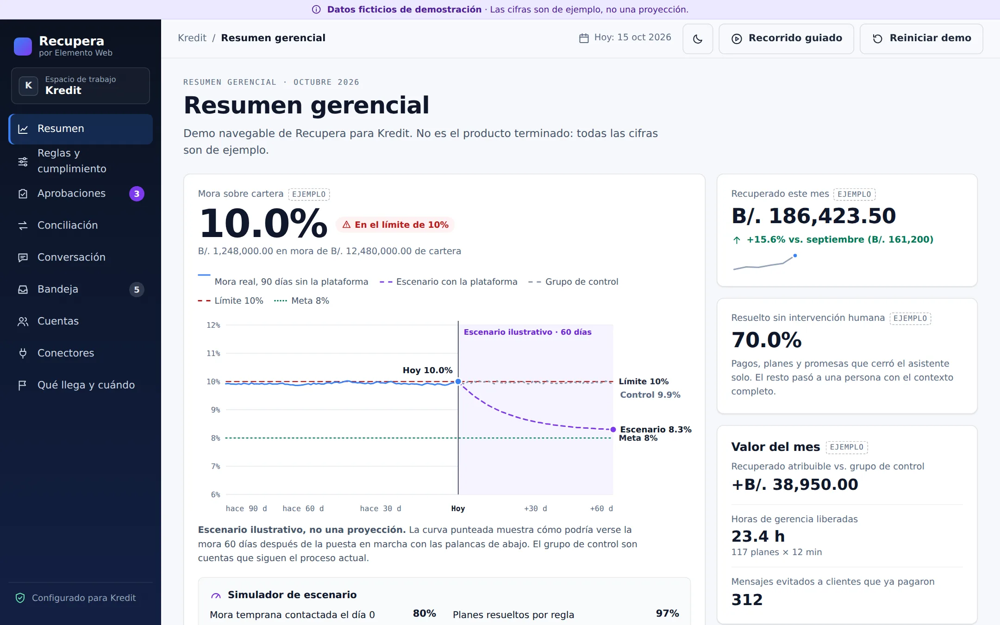
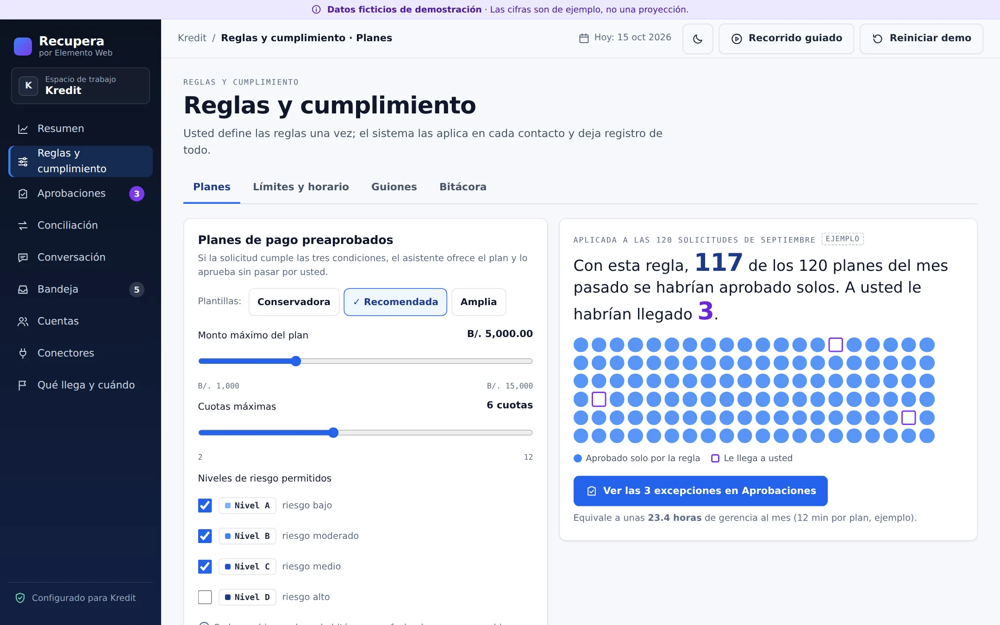

Resumen ejecutivo
Recuperar más, con menos horas y con cada contacto registrado
Proponemos poner en marcha, en 8 a 14 semanas, una operación de cobranza automatizada sobre su cartera actual. La plataforma trabaja en tres capas: segmenta cada cuenta por riesgo con los datos del SIF y de AgileCheck, contacta de forma automática por WhatsApp, email y SMS según los días de mora, y llama con un agente de voz con IA a las cuentas en mora avanzada.
Antes de encender la IA resolvemos los dos frenos de hoy: los planes de pago que aprueba la Gerencia General uno por uno y la conciliación de pagos por correo. Sin eso, el sistema contactaría más rápido, pero cada caso seguiría esperando una aprobación o un registro manual.
Diagnóstico
La mora ya está en el límite que permite la regulación
Según nos indicaron, la cartera en mora de Kredit está en el 10%, que es el tope regulatorio que les aplica. Eso cambia la naturaleza del proyecto: no se trata solo de cobrar mejor, sino de salir de la zona de riesgo regulatorio y mantener un margen de seguridad. Cualquier deterioro adicional de la cartera los pondría por encima del límite.
El valor de 10% y el límite aplicable se confirman con el oficial de cumplimiento de Kredit en la fase 1, junto con la meta de mora que fijaremos como objetivo del proyecto.
Dos frenos que hay que quitar primero
En la reunión identificamos dos cuellos de botella que hoy limitan cualquier esfuerzo de cobranza, con o sin IA. Por eso la fase 1 los resuelve antes de activar el agente de voz.
Cobrar a un cliente que ya pagó, porque el pago todavía no se registró, es una de las causas más comunes de reclamos. La conciliación automática elimina ese riesgo.
Tecnología disponible hoy
Un agente de voz que llama, negocia dentro de reglas y deja todo grabado
Hoy existen agentes de voz con IA que hacen llamadas de cobranza con voz natural en español. Se identifican como sistema automatizado, recuerdan el saldo, ofrecen planes de pago preaprobados y transfieren a una persona cuando detectan una disputa o un caso delicado. No reemplazan a su equipo: le quitan las llamadas repetitivas para que se concentre en los casos que de verdad necesitan criterio humano.
Escala
Cientos de llamadas al día
Cada cuenta en la etapa correspondiente recibe su llamada a tiempo, dentro del horario permitido, sin depender de la disponibilidad del equipo.
Consistencia
El mismo guion, siempre
Ninguna llamada sale del tono aprobado ni ofrece algo fuera de las reglas. Cada conversación queda grabada y transcrita.
Control
Una persona decide lo delicado
Disputas, menciones legales o clientes vulnerables pasan de inmediato a un cobrador, con el resumen de la conversación.
La solución
Una plataforma propia, conectada a sus sistemas
Es una plataforma de Elemento Web que operamos como servicio: Kredit no compra servidores ni licencias sueltas ni mantiene integraciones. Se conecta al SIF y a AgileCheck, usa sus canales oficiales y escribe de vuelta en el SIF los pagos, promesas y gestiones.
En violeta, los dos módulos que resuelven los frenos actuales: el motor de reglas, que sustituye la aprobación caso por caso, y la conciliación automática. La forma de conexión con el SIF (API, base de datos de solo lectura o archivo diario) se define en la fase 1 con su equipo de sistemas.
- Conector de datosLee del SIF saldos, cuotas, días de mora e historial de pago, y de AgileCheck el score de cada cliente. Escribe de vuelta pagos, promesas y gestiones.
- Motor de reglasLa Gerencia General define una vez qué planes se pueden ofrecer, a quién y con qué condiciones. Lo que entra en la regla se ofrece al instante; solo las excepciones le llegan a aprobar.
- Conciliación de pagosRecibe los pagos por link de pago o por el aviso o archivo del banco, los cruza con la cuenta y saca al cliente de la secuencia en minutos, no al día siguiente.
- Bandeja de cobradoresLas disputas, los casos de riesgo y las excepciones llegan a su equipo con el historial completo de la cuenta y de cada contacto.
Demo navegable
Véalo funcionando antes de decidir
Preparamos una maqueta navegable de la plataforma con datos ficticios de una cartera como la suya. Puede recorrerla por su cuenta: definir una regla y ver cuántos planes se aprobarían solos, simular un pago entrante, reproducir una conversación de WhatsApp y una llamada, y exportar la bitácora.


Capa 1 · Segmentación
Cada cuenta recibe la intensidad que le corresponde
Aprovechamos el score de AgileCheck que ya usan, en vez de construir otro, y lo combinamos con el comportamiento de pago de cada cliente. Así el esfuerzo se concentra donde más se recupera.
| Criterio | Fuente | Uso en la segmentación |
|---|---|---|
| Días de mora | SIF | Define en qué etapa de la secuencia entra la cuenta. |
| Monto adeudado | SIF | Prioriza el esfuerzo hacia los montos altos. |
| Score de riesgo | AgileCheck | Ajusta la probabilidad de pago estimada. |
| Historial de pagos y promesas | SIF y plataforma | Distingue al cliente que se atrasa por descuido del que no tiene intención de pagar. |
| Canal que responde | Plataforma | Prioriza el canal en el que ese cliente suele contestar. |
| Disputas o reclamos abiertos | SIF o atención al cliente | Saca la cuenta de la automatización y la asigna a una persona. |
| Nivel | Perfil | Tratamiento |
|---|---|---|
| A · Bajo | Buen historial, atraso corto | Recordatorios amables por WhatsApp; sin llamadas. |
| B · Medio | Atrasos ocasionales | Secuencia completa por mensajes; llamada con IA desde el día 10. |
| C · Alto | Atrasos repetidos o score bajo | Llamada con IA más temprana y oferta de plan preaprobado. |
| D · Crítico | Monto alto, mora avanzada o promesas incumplidas | Cobrador humano desde el inicio, con apoyo de la plataforma. |
Cuatro niveles como punto de partida, con reglas simples y explicables. Los cortes se calibran con su cartera real en la fase 2.
Capa 2 · Secuencia multicanal
El contacto correcto, el día correcto, por el canal correcto
Cada cuenta avanza por una secuencia según sus días de mora. Todo ocurre de forma automática, dentro del horario y de los límites de contacto permitidos.
Los mensajes de WhatsApp salen por la API oficial de Meta, con plantillas aprobadas y con la marca de Kredit verificada. Así se evita el bloqueo del número y se cumple la política de mensajes de la plataforma.
Capa 3 · Agentes con IA
Dos agentes que atienden, ofrecen y escalan
WhatsApp, desde el día 0
Agente conversacional
- Responde saldo, fecha de vencimiento e historial con datos reales del SIF. No inventa montos.
- Envía el link de pago y confirma cuando el pago entra.
- Ofrece planes dentro de las reglas preaprobadas y registra la promesa de pago.
- Detecta «ya pagué», «no es mío» o «quiero hablar con un abogado» y pasa el caso a una persona, deteniendo los mensajes.
Voz, desde el día 10–15
Agente de llamadas
- Llama desde un número local y se identifica como sistema automatizado de Kredit.
- Verifica la identidad antes de hablar de la deuda.
- Negocia solo dentro de las reglas y confirma el acuerdo por WhatsApp.
- Graba y transcribe cada llamada, y transfiere a un cobrador ante disputa o riesgo.
| Plataforma de voz | Fortaleza | Costo de referencia |
|---|---|---|
| Retell AI | Casos de cobranza ya probados e integración con sistemas de préstamos. | US$0.07–0.31 / min |
| Vapi | Más flexible para integrar reglas de cumplimiento propias. | US$0.05 / min + telefonía y voz |
| Bland AI | Modelo de voz propio y baja latencia. | Variable |
Elegimos la plataforma en la fase 1 con pruebas de voz en español de Panamá. El orquestador no depende de un solo proveedor: si uno sube de precio o baja de calidad, se cambia sin rehacer el sistema.
Cumplimiento y gobernanza
Diseñado para resistir una auditoría
En una entidad regulada, lo que importa no es solo cuánto se cobra, sino cómo. Cada regla se configura dentro de los límites que exigen su ente regulador y la normativa de protección al consumidor, y queda documentada.
- Límites de contactoMáximo de intentos por cuenta, por día y por semana, y horario permitido. El sistema no puede pasarse aunque alguien lo intente.
- IdentificaciónEl agente, por voz o por WhatsApp, se identifica siempre como sistema automatizado de Kredit al inicio.
- Pausa y escalamientoAnte una disputa, un reclamo, una mención legal o un pedido de no contacto, se detiene la automatización y el caso pasa a una persona.
- TercerosNunca se habla de la deuda con alguien distinto al titular. La identidad se verifica antes de dar cualquier dato.
- Bitácora auditableFecha, hora, canal, contenido, grabación y resultado de cada contacto. Se exporta para una auditoría o para responder un reclamo.
- Datos personalesTratamiento conforme a la Ley 81 de 2019 de protección de datos personales: acceso por roles, cifrado y datos que no se usan para entrenar modelos de IA.
- Aprobación de guionesTodos los mensajes y guiones de llamada los aprueba Kredit antes de salir, y cualquier cambio queda versionado.
Dashboard
La cobranza en tiempo real, en una sola pantalla
La Gerencia General ve en todo momento cuánto se recupera, por qué canal y si se cumplen los límites. Medimos la situación inicial en la fase 1 para que el resultado se pueda comparar con datos y no con impresiones.
| Métrica | Qué responde |
|---|---|
| Mora sobre cartera total | ¿Cuánto margen tenemos frente al límite regulatorio? |
| Recuperación por etapa y canal | ¿Qué mensaje, canal o llamada está funcionando? |
| Monto recuperado frente a mora | ¿Cuánto dinero devolvió el sistema este mes? |
| Promesas de pago cumplidas | ¿Los acuerdos que se cierran se pagan de verdad? |
| Paso de mora temprana a avanzada | ¿Estamos frenando el deterioro de la cartera? |
| Casos resueltos sin intervención humana | ¿Cuántas horas del equipo liberamos? |
| Tiempo hasta el primer contacto | ¿Qué tan rápido actuamos sobre una cuenta nueva en mora? |
| Casos escalados y motivo | ¿Cuántas disputas y casos de riesgo hay, y por qué? |
| Cumplimiento de límites | ¿Alguna cuenta recibió más contactos de los permitidos? Debe ser siempre cero. |
Fases y cronograma
De 8 a 14 semanas, empezando por quitar los frenos
El plazo depende sobre todo de qué tan rápido tengamos acceso a los datos del SIF y de la aprobación de las reglas y guiones por parte de Kredit.
| Fase | Duración | Entregables | Criterio de salida |
|---|---|---|---|
| 1 · Descubrimiento y bases | 1–3 sem. | Acceso a datos del SIF y AgileCheck; reglas de planes preaprobados con la Gerencia General; conciliación automática de pagos; límites de cumplimiento confirmados; medición inicial. | Un pago se concilia solo y un plan dentro de regla se aprueba sin intervención |
| 2 · Segmentación y secuencia | 2–3 sem. | Niveles de riesgo calibrados; secuencia por WhatsApp, email y SMS en n8n; plantillas aprobadas por Meta; bitácora activa. | Cuentas reales reciben su secuencia y salen al pagar |
| 3 · Agente de WhatsApp | 2–3 sem. | Agente en producción con consultas de saldo, links de pago, planes preaprobados y escalamiento a la bandeja. | Resuelve consultas simples sin persona y escala bien las disputas |
| 4 · Agente de voz | 2–4 sem. | Plataforma de voz elegida, número local, guiones aprobados, grabación y transcripción; salida gradual por volumen. | Llamadas activas en mora avanzada sin incumplir ningún límite |
| 5 · Dashboard y ajuste | 1–2 sem. | Panel en vivo, comparación con la medición inicial, ajuste de reglas, mensajes y horarios. | La Gerencia General sigue la cobranza desde el panel |
Inversión
Implementación única y servicio mensual
La plataforma se cobra como servicio: una implementación inicial para conectarla a sus sistemas y a sus reglas, y una mensualidad que cubre la operación, el soporte y las mejoras continuas. El consumo de terceros se factura a costo, sin margen.
Pago único
Implementación
Fases 1 a 5, de 8 a 14 semanas.
- Integración con SIF y AgileCheck
- Motor de reglas y conciliación
- Secuencia multicanal y agentes de IA
- Dashboard, capacitación y puesta en marcha
Mensual
Plataforma de cobranza
Operación continua desde la puesta en marcha.
- Alojamiento, seguridad y respaldos
- Hasta ___ cuentas gestionadas al mes
- Soporte y ajustes de reglas y guiones
- Mejoras continuas de la plataforma
- Informe mensual de resultados
Según uso
Consumo de terceros
Facturado a costo, con el detalle del proveedor.
- Minutos del agente de voz y telefonía
- Conversaciones de WhatsApp (tarifa de Meta)
- SMS y correo transaccional
- Uso de modelos de IA
Precio por definir: Kredit no tiene un presupuesto asignado para este proyecto. Lo fijamos con usted tras confirmar el tamaño de la cartera y el volumen de cuentas en mora.
Riesgos del plan
Lo que puede complicarlo y cómo lo evitamos
| Riesgo | Mitigación |
|---|---|
| El SIF no tiene una API o el acceso a los datos se demora | Plan B con base de datos de solo lectura o archivo diario; el plazo cuenta desde que tenemos acceso. |
| Las reglas de planes de pago no se definen y todo vuelve a la Gerencia General | Taller con la Gerencia General en la fase 1. El agente de voz no sale hasta tener las reglas. |
| Un mensaje o llamada fuera de tono afecta la marca o genera un reclamo | Guiones aprobados por Kredit, límites que no se pueden saltar, salida gradual y revisión de muestras grabadas. |
| Bloqueo del número de WhatsApp | API oficial de Meta, plantillas aprobadas y opción de baja en cada mensaje. |
| Costo de voz por encima de lo previsto | Llamadas solo a los niveles de riesgo que lo justifican, tope mensual de minutos y reporte de consumo. |
Para avanzar
Lo que necesitamos de Kredit
- Acceso a datosContacto en sistemas y forma de conexión con el SIF (API, base de solo lectura o archivo diario) y con AgileCheck.
- CarteraNúmero de cuentas activas y en mora por tramo de días, y monto total, para dimensionar el servicio y fijar el precio.
- Reglas de planesUna sesión de una hora con la Gerencia General para definir los planes de pago preaprobados.
- PagosBancos y medios de pago que usan sus clientes, y cómo les llega hoy el aviso de cada pago.
- CumplimientoSu oficial de cumplimiento, para confirmar límites de contacto, horarios y textos obligatorios.
- CanalesNúmero de WhatsApp Business y dominio de correo de Kredit, y la verificación de la empresa en Meta.
Condiciones
Condiciones comerciales
Pago de la implementación. por definir al firmar y el resto contra entrega de cada fase. Transferencia, ACH o Yappy.
Mensualidad. Empieza con la puesta en marcha de la fase 2. Plazo mínimo de __ meses.
Datos. Los datos de cartera, clientes y contactos son de Kredit. Se exportan completos cuando lo pida y se eliminan al terminar el servicio.
Plataforma. El software de la plataforma es de Elemento Web y se presta como servicio.
Confidencialidad. Acuerdo de confidencialidad y de tratamiento de datos firmado antes de recibir cualquier dato. Los datos no se usan para entrenar modelos de IA.
Disponibilidad y soporte. Soporte en horario laboral, atención prioritaria a incidentes que detengan la cobranza y respaldos diarios.
Alcance. El descrito en esta propuesta. Los cambios de alcance se cotizan aparte.
Validez. Esta propuesta vale hasta el 6 de noviembre de 2026. Precios en USD sin ITBMS (7%).
¿Empezamos por quitar los frenos?
Al aceptar, agendamos el taller de reglas con la Gerencia General y la sesión con sistemas para conectar el SIF. En dos semanas los pagos se concilian solos.